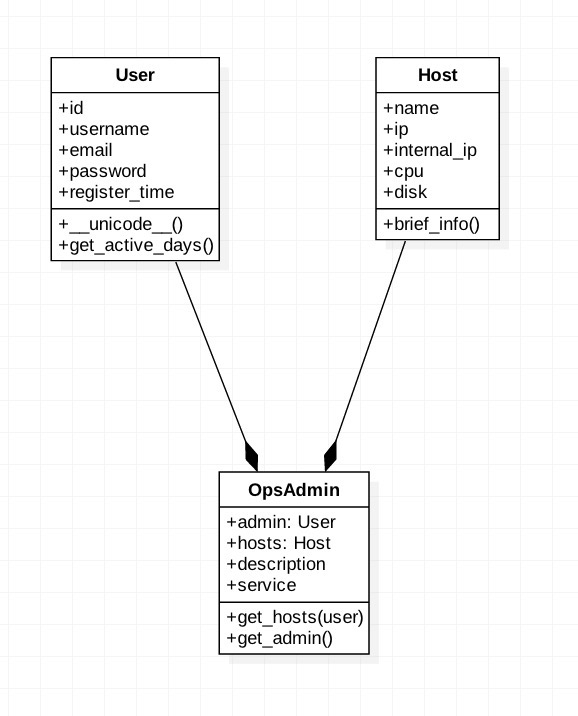

Python语言基础¶
1、环境搭建¶
- Python 2.7.*
- Mac or Ubuntu Kylin
- Eclipse IDE for Java Developers
- Pydev Last Site Update: 22 March 2016 | Latest Version: 4.5.5
Python环境搭建¶
vim ~/.pip/pip.conf 加入这个配置使用doubanio的源,可以加速下载python相关依赖包
[global]
index-url = http://pypi.doubanio.com/simple
trusted-host = pypi.doubanio.com
如果找不到路径:
mkdir ~/.pip
验证: 随意下载一个 pip install -U ipython
可以看见: 源成为了doubanio
特别特别注意一下 ,这个地方配置前边不要有空格,前边配置为pypi.douban.com要修改一下哈
- virtualenv
- [官方文档]
- 作用
- 基本命令
pip install virtualenv
- virtualwrapper
- 官方文档
- 作用
- 基本命令
pip install virtualenvwrapper
#python virtualenv管理工具,避免各种virtualenv太多目录各种散落
if [ -f /usr/local/bin/virtualenvwrapper.sh ]; then
export WORKON_HOME=$HOME/.virtualenvs
source /usr/local/bin/virtualenvwrapper.sh
fi
新打开一个terminal
workon
mkvirtualenv courses
在自己的~/.bash_rc加入
- ipython
pip install ipython
Pydev环境搭建¶
Pydev快捷键和小技巧¶
- 配置多个虚拟环境. 以courses,IDC,DevOps
- 快捷键大全
- 快捷键
- 简单程序调试
- 视频 Python Videos, Tutorials and Screencasts
- 视频: virtualenv
- 视频: 快捷键技巧
Pydev插件¶
- vrapper
- GFM: github flavor markdown
- AnyEdit Tools
初识Python¶
- 很多人都会忽视的地方:Python官网
- Python官方文档
- 项目地址: Python Cookbook 3rd Edition Documentation
- Python 基础教程
- 搭建Python工程化开发框架
2、基本操作¶
It works!!!¶
输出/打印¶
- pprint
- format
- json.dumps
输入¶
- raw_input
- sys.args
- OptionParser
基本运算操作¶
常用数据结构¶
- tuple
- list
- 列表解析
- dict
-
set
-
迭代器
- yield
效率提升数据结构¶
- nametuple
- Counter
- defaultdict
其他非常有用的数据类型
流程控制¶
- if/else
- for
- while
- break
- continue
高阶函数(函数式编程)¶
- map
- reduce
- filter
标准库¶
non-essential-built-in-functions
- zip
- getattr
- setattr
- unicode 和 str编码问题
一切都很简单,但是我们得按规范干¶
- Python语言规范,pep8
- 借助工具: pylint, Pydev 代码分析,格式化
典型语言规范问题¶
- 函数/变量 Python之父Guido推荐的规范
- 文件打开 with使用
- main函数 恰当地使用main
3、类¶
基本概念¶
类概念¶
- 类(Class): 用来描述具有相同的属性和方法的对象的集合。它定义了该集合中每个对象所共有的属性和方法。对象是类的实例。
- 类变量：类变量在整个实例化的对象中是公用的。类变量定义在类中且在函数体之外。类变量通常不作为实例变量使用。
- 数据成员：类变量或者实例变量用于处理类及其实例对象的相关的数据。
- 类方法：类中定义的函数。
-
继承：即一个派生类（derived class）继承基类（base class）的字段和方法。继承也允许把一个派生类的对象作为一个基类对象对待。例如，有这样一个设计：一个Dog类型的对象派生自Animal类，这是模拟”是一个（is-a）”关系（例图，Dog是一个Animal）。
-
类方法重写：如果从父类继承的方法不能满足子类的需求，可以对其进行改写，这个过程叫方法的覆盖（override），也称为方法的重写。
-
基础重载方法
多继承¶
对象¶
- 类实例化：创建一个类的实例，类的具体对象。
- 对象：通过类定义的数据结构实例。对象包括两个数据成员（类变量和实例变量）和方法。
- 实例变量：定义在方法中的变量，只作用于当前实例的类。
使用mongoengine和flask_admin实战类与继承[精读以下文档]¶
mongoengine¶
官方文档,快速入门,使用
MongoDB 教程,了解基本概念,增删查改一定要会
[中文版]+MongoDB权威指南 书
mongodb数据库官网文档
flask_admin¶
Flask-Admin快速入门,概览很简单
Flask中文教程,非常值得研究
Flask_admin官方文档, 做技术英文文档绕不过去,多多读
# coding:utf-8
'''
Created on 2016年4月24日
@author: likaiguo
'''
from __future__ import print_function, unicode_literals
import datetime
class User(object):
"""
用户类
"""
id = 0
username = ''
email = ''
password = ''
regiter_time = datetime.datetime(2014, 12, 10)
def __init__(self, username=''):
self.username = username
def __str__(self):
return 'User: %s' % self.username
def get_register_date(self):
return datetime.datetime.now() - self.regiter_time
def get_register_days(self):
"""
获取注册天数
"""
delta = self.get_register_date()
return delta.days
@staticmethod
def print_hello(x='hello'):
print(x)
@property
def register_days(self):
return self.get_register_days()
@property
def regiter_seconds(self):
delta = self.get_register_date()
return delta.seconds
class Utils(object):
@staticmethod
def print_json(data):
import json
print(json.dumps(data, indent=4, ensure_ascii=False))
class SubUser(User):
def __init__(self, username=''):
self.username = 'sub_username: %s' % username
def get_register_days(self):
days = User.get_register_days(self)
return str(days)
if __name__ == '__main__':
user = User()
user.username = 'likaiguo'
print(user.username)
print("id:%d : username: %s" % (user.id, user.username))
days1 = user.get_register_days()
user2 = SubUser()
days2 = user2.get_register_days()
user3 = User(username='likaiguo-2')
print(user3)
user4 = SubUser(username='likaiguo-3')
print(user4)
User.print_hello(x='haowan-hello')
Utils.print_json(data={'name': '李开国', 'id': 100, 'other': {1: 2}})
print(user4.register_days)
装饰器¶
- @staticmethod
- @classmethod
- @property
- 自定义装饰器
从零开始构造类(Host,User)¶

从mongoengine继承¶
- 连接数据库
- 写入数据
- 验证写入
与flask_admin集成¶
- 展示到页面
# coding:utf-8
'''
Created on 2016年4月23日
@author: likaiguo
第一步: workon haowan-courses
第二步: pip install mongoengine
第三步: 写下面的程序
'''
from __future__ import unicode_literals, print_function
import datetime
from mongoengine import Document, StringField, DateTimeField
from mongoengine import connect
# 连接mongo数据库:haowan
HOST = '192.168.8.108'
connect('haowan', host=HOST)
class Host(Document):
"""
数据库模型
"""
name = StringField()
add_time = DateTimeField(default=datetime.datetime.now())
meta = {
'collection': 'host',
}
if __name__ == '__main__':
from flask import Flask
import flask_admin as admin
from flask_admin.contrib.mongoengine import ModelView
# Flask App
app = Flask('hello')
app.config['SECRET_KEY'] = '123456790'
# 用flask_admin来展示
admin = admin.Admin(app, u'聘宝数据分析平台')
admin.add_view(ModelView(Host))
app.run(debug=True)
大家存在的一些问题¶
- 代码规范: 注释位置,命名
- 理解你正在写的程序
4、All in One 完成一个复杂任务¶
善用工具:pydev¶
- 代码风格统一: 自动sort import包,编辑器format代码
- 自定义风格: pep8各种警告,ignore
- 学会使用调试: 一定要爱上调试(F5,F6,F7);调试和运行(F11,Ctrl+F11)
测试¶
编写软件是人所承担的最复杂的任务之一。 AWK 编程语言和 “K and R C” 的作者之一 Brian Kernigan 在 Software Tools 一书中总结了软件开发的真实性质， “控制复杂性是软件开发的根本。”
- 成功的软件开发人员会按照便于自动化的方式运行测试，这样就可以不断地证明软件工作正常。
- 他们严格地遵守自己的方法，在每个阶段都进行认真的复查，寻找重构的机会。
- 他们经常思考如何确保其软件是可测试、可读且可维护的。
测试的重要性¶
- 测试可以保证你的代码在一系列给定条件下正常工作
- 测试允许人们确保对代码的改动不会破坏现有的功能
- 测试迫使人们在不寻常条件的情况下思考代码，这可能会揭示出逻辑错误
- 良好的测试要求模块化，解耦代码，这是一个良好的系统设计的标志
Python中的测试框架¶
- doctest 标准库
- unittest 标准库
- nose 第三方框架,各种插件
各种应对的场景不同,洞悉各个优秀的开源项目.例如: pyes,flask_admin,flask,django
练习单元测试: 一定要动起手来,一定要练¶
IDC项目的各个细节¶
其中涉及到django的开发,基础信息包使用psutil, platform
从最简单的开始
psutil使用¶
psutil官方文档 源码 赏析flask,psutil,bootstrap案例
platform使用¶
初识django¶
我最喜欢的是django的官方文档. 结合查询特定的中英文资料对单个点理解,再回去看官方文档.
django之所以成为Python社区中最流行的Web框架,其中最重要一点是其文档详实.
django 1.8.2中文翻译文档 编写你的第一个Django应用
这个教程的千万千万一定要把序言和tutorial的前三节看了哈.
异常处理¶
- 异常捕捉